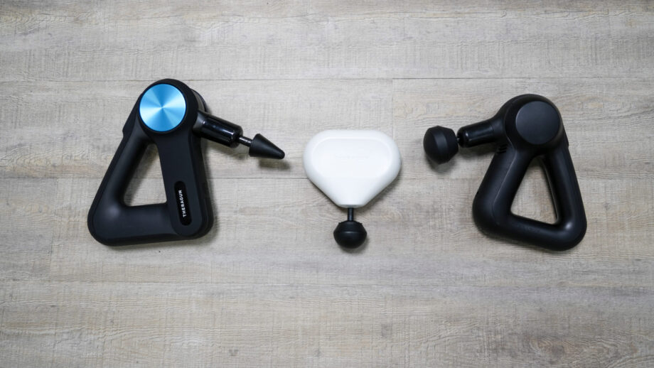
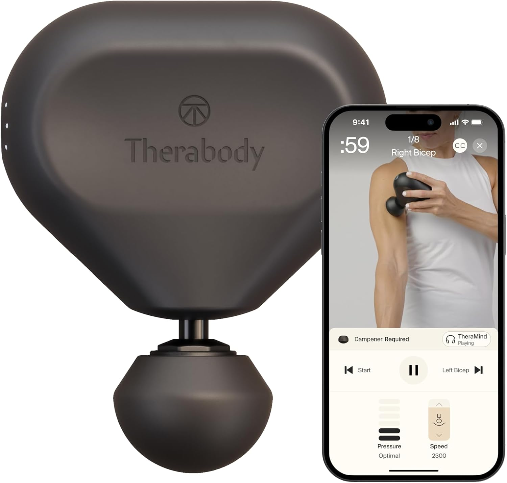
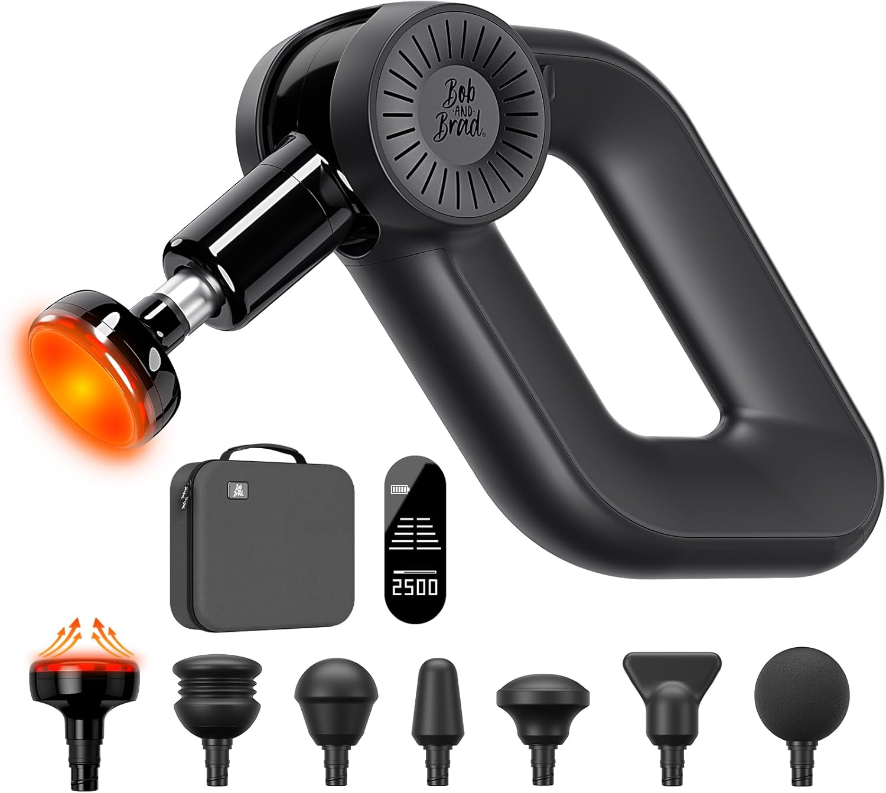

Terapia percussiva: minha “arma secreta” contra rigidez
Pistolas de massagem não são só para atletas profissionais. No pós-operatório, elas ajudam a soltar tecidos, reduzir rigidez e “acordar” o quadríceps que costuma desligar depois da cirurgia.

Estratégia “casa vs. rua”
Quando eu comecei minha recuperação, eu queria algo confiável, mas portátil. Eu escolhi a Theragun Mini (2.0). Ela é pequena o suficiente para morar na minha bolsa de trabalho - dá para usar embaixo da mesa durante calls ou em viagens, evitando que a perna “trave” de tanta rigidez.
Mas tem um trade-off. A Mini resolve 80% dos cenários, porém modelos maiores como a Theragun Prime ou Elite costumam ter mais “amplitude” (o quanto a cabeça vai e volta), chegando mais fundo no músculo. Se você tem orçamento e espaço, ter uma unidade grande em casa e uma Mini para o dia a dia é o padrão ouro para a reabilitação.
Importante para o Brasil: nem todos esses modelos são fáceis de achar por aqui (e quando aparecem, o preço pode ser alto). Se você não consegue viajar e comprar fora, foque nos critérios: boa amplitude, motor estável e ponteiras úteis - e escolha uma opção confiável que esteja disponível no Brasil.
“Eu uso a versão Mini todos os dias. Ela é perfeita para viagens e alívio rápido no escritório. Mas para recuperação profunda em casa, um modelo mais potente vale o investimento.”
Modelos bem avaliados (referência)
| Modelo | Melhor para | Destaque |
|---|---|---|
| Theragun Mini 2.0 | Portabilidade | Boa amplitude em tamanho pequeno. Conecta com app (Bluetooth). |
| Theragun Prime / Elite | Padrão para casa | Mais profundidade para tecido profundo. Pegada ergonômica “triângulo”. |
| Bob and Brad (linha D6/C2) | Custo-benefício | Boa potência por preço mais baixo. Design pensado por fisioterapeutas. |
| Hyperice Hypervolt 2 | Silêncio | Motor bem silencioso. Bom para usar vendo TV sem incomodar. |
Observação: a disponibilidade e o preço desses modelos podem variar bastante no Brasil.
Theragun Mini 2.0
Um jeito fácil de manter consistência quando você está fora de casa.
- ✅ Super leve e cabe em qualquer mochila
- ✅ Conecta no app com rotinas guiadas
- ✅ Boa potência para um aparelho pequeno
- ⚠️ Menor “stall force” — não pressione demais

Bob and Brad (linha)
Boa opção custo-benefício se Therabody parecer caro demais.
- ✅ Boa construção pelo preço
- ✅ Ponteiras “macias” mais seguras para regiões sensíveis
- ✅ Modelo C2 é ótimo para viagem
- 💡 Dica: costuma entrar em promoções

Como associado da Amazon, eu posso ganhar comissão em compras qualificadas.
Dicas de pistola de massagem para reabilitação do joelho
Evite o osso
Não use diretamente na patela nem em cima da cicatriz/incisão. Foque nos tecidos moles: quadríceps, posteriores e panturrilha. Soltar a musculatura “de suporte” tira muita pressão do joelho.
Acordando o VMO
Use no VMO (o “músculo em gota” na parte interna acima do joelho). A percussão pode ajudar a estimular nervos e trazer esse estabilizador de volta após a atrofia.
Olhe a amplitude
Modelos muito baratos só “vibram” na superfície. Para resultados de verdade em tecido profundo, procure algo com boa amplitude (ex.: 12mm ou mais como referência).
Use o app (se tiver)
Não vá no improviso. Apps como o da Therabody trazem rotinas para joelho e pós-cirurgia com orientação de regiões e pressão. É quase como um fisio guiando sua mão.